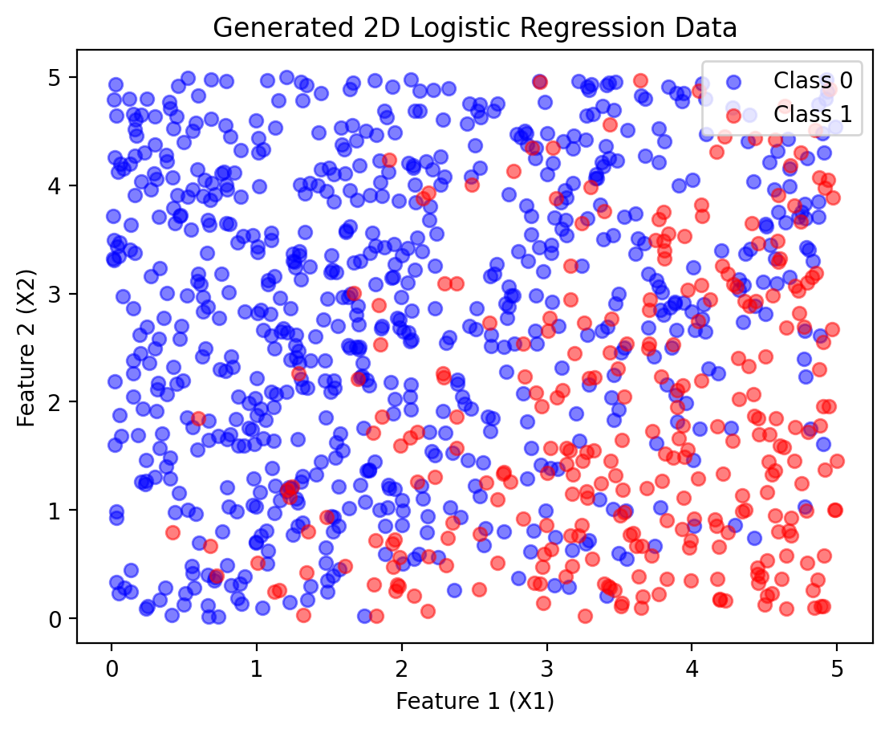

PMF and their applications
Probability Mass Functions (PMF) and Their Applications
Introduction
Probability Mass Functions (PMF) are fundamental tools for describing the behavior of discrete random variables. A PMF tells us the probability that a discrete random variable takes each of its possible values. This concept is essential for understanding many real-world phenomena, from coin flips and dice rolls to classification problems in machine learning.
In this notebook, we’ll explore PMFs through both theoretical foundations and practical applications, including their connection to logistic regression - one of the most important classification algorithms in machine learning. We’ll see how the Bernoulli distribution (a special PMF) naturally leads to logistic regression for binary classification problems.
Learning Objectives
By the end of this notebook, you will be able to:
- Define and interpret Probability Mass Functions (PMF)
- Distinguish between PMF, PDF, and CDF
- Work with common discrete distributions (Bernoulli, Binomial, Categorical)
- Apply PMFs to real-world modeling scenarios
- Connect PMFs to logistic regression for classification
- Implement and visualize PMF-based models using Python
- Understand the generative vs. discriminative modeling paradigm
Theoretical Background
Definition of Probability Mass Function
For a discrete random variable \(X\) that can take values \(x_1, x_2, \ldots, x_k\), the Probability Mass Function (PMF) is:
\[P(X = x_i) = p_i\]
where \(p_i \geq 0\) for all \(i\), and \(\sum_{i=1}^k p_i = 1\).
Key Properties of PMF:
- Non-negativity: \(P(X = x) \geq 0\) for all \(x\)
- Normalization: \(\sum_{\text{all } x} P(X = x) = 1\)
- Additivity: \(P(X \in A) = \sum_{x \in A} P(X = x)\) for any set \(A\)
Common Discrete Distributions:
1. Bernoulli Distribution
For binary outcomes (success/failure): \[P(X = 1) = p, \quad P(X = 0) = 1-p\]
2. Binomial Distribution
For \(n\) independent Bernoulli trials: \[P(X = k) = \binom{n}{k} p^k (1-p)^{n-k}\]
3. Categorical Distribution
For \(k\) mutually exclusive outcomes: \[P(X = i) = p_i, \quad \sum_{i=1}^k p_i = 1\]
Connection to Machine Learning
PMFs are fundamental to many machine learning algorithms: - Classification: Predicting discrete class labels - Generative Models: Modeling the joint distribution \(P(X, Y)\) - Discriminative Models: Modeling the conditional distribution \(P(Y|X)\)
Practical Implementation
Example 1: Understanding Basic PMFs
Let’s start with simple examples to build intuition about PMFs.
# Example 1: Basic PMF Examples
# 1. Fair Die PMF
die_outcomes = np.arange(1, 7) # {1, 2, 3, 4, 5, 6}
die_pmf = np.ones(6) / 6 # Each outcome has probability 1/6
# 2. Loaded Die PMF
loaded_die_pmf = np.array([0.1, 0.1, 0.1, 0.1, 0.2, 0.4]) # Favors 5 and 6
# 3. Bernoulli PMF (Coin flip)
coin_outcomes = np.array([0, 1]) # {Tails, Heads}
coin_pmf = np.array([0.3, 0.7]) # Biased toward heads
# Visualization
fig, axes = plt.subplots(1, 3, figsize=(15, 5))
# Fair die
axes[0].bar(die_outcomes, die_pmf, alpha=0.7, color='blue')
axes[0].set_title('Fair Die PMF')
axes[0].set_xlabel('Outcome')
axes[0].set_ylabel('Probability')
axes[0].set_ylim(0, 0.5)
axes[0].grid(True, alpha=0.3)
# Add probability values on bars
for i, p in enumerate(die_pmf):
axes[0].text(i+1, p+0.01, f'{p:.3f}', ha='center', va='bottom')
# Loaded die
axes[1].bar(die_outcomes, loaded_die_pmf, alpha=0.7, color='red')
axes[1].set_title('Loaded Die PMF')
axes[1].set_xlabel('Outcome')
axes[1].set_ylabel('Probability')
axes[1].set_ylim(0, 0.5)
axes[1].grid(True, alpha=0.3)
for i, p in enumerate(loaded_die_pmf):
axes[1].text(i+1, p+0.01, f'{p:.3f}', ha='center', va='bottom')
# Biased coin
axes[2].bar(coin_outcomes, coin_pmf, alpha=0.7, color='green')
axes[2].set_title('Biased Coin PMF')
axes[2].set_xlabel('Outcome (0=Tails, 1=Heads)')
axes[2].set_ylabel('Probability')
axes[2].set_ylim(0, 0.8)
axes[2].grid(True, alpha=0.3)
for i, p in enumerate(coin_pmf):
axes[2].text(i, p+0.02, f'{p:.3f}', ha='center', va='bottom')
plt.tight_layout()
plt.show()
# Verify PMF properties
print("VERIFICATION OF PMF PROPERTIES:")
print("="*40)
print(f"Fair die:")
print(f" - All probabilities ≥ 0: {all(die_pmf >= 0)}")
print(f" - Sum = 1: {np.sum(die_pmf):.6f}")
print(f"\nLoaded die:")
print(f" - All probabilities ≥ 0: {all(loaded_die_pmf >= 0)}")
print(f" - Sum = 1: {np.sum(loaded_die_pmf):.6f}")
print(f"\nBiased coin:")
print(f" - All probabilities ≥ 0: {all(coin_pmf >= 0)}")
print(f" - Sum = 1: {np.sum(coin_pmf):.6f}")
print(f"\nExpected Values:")
print(f" - Fair die: {np.sum(die_outcomes * die_pmf):.3f}")
print(f" - Loaded die: {np.sum(die_outcomes * loaded_die_pmf):.3f}")
print(f" - Biased coin: {np.sum(coin_outcomes * coin_pmf):.3f}")Example 2: Bernoulli Distribution and Binary Classification
The Bernoulli distribution is fundamental to binary classification. Let’s explore how it connects to logistic regression.
Generating Synthetic Binary Classification Data
We’ll create a dataset where the class labels follow a Bernoulli distribution whose parameter depends on the input features.
Understanding the Data Generation Process:
- Linear Combination: \(z = w_1 x_1 + w_2 x_2 + b\) (logits)
- Sigmoid Transformation: \(p = \sigma(z) = \frac{1}{1 + e^{-z}}\)
- Bernoulli Sampling: \(Y \sim \text{Bernoulli}(p)\)
This creates a natural connection between continuous features and binary outcomes through the Bernoulli PMF.
# Visualize how the Bernoulli PMF varies across feature space
fig, axes = plt.subplots(2, 3, figsize=(18, 12))
# 1. Probability surface
x1_range = np.linspace(0, 5, 50)
x2_range = np.linspace(0, 5, 50)
X1_grid, X2_grid = np.meshgrid(x1_range, x2_range)
# Compute probability for each point
logits_grid = w1 * X1_grid + w2 * X2_grid + b
prob_grid = torch.sigmoid(torch.tensor(logits_grid)).numpy()
contour = axes[0, 0].contourf(X1_grid, X2_grid, prob_grid, levels=20, cmap='RdYlBu_r')
axes[0, 0].set_title('Bernoulli Parameter p(x₁, x₂)\nProbability of Class 1')
axes[0, 0].set_xlabel('Feature 1 (X₁)')
axes[0, 0].set_ylabel('Feature 2 (X₂)')
plt.colorbar(contour, ax=axes[0, 0])
# Add decision boundary (p = 0.5)
contour_line = axes[0, 0].contour(X1_grid, X2_grid, prob_grid, levels=[0.5], colors='black', linewidths=2)
axes[0, 0].clabel(contour_line, inline=True, fontsize=10)
# 2. Data points with probability coloring
X1_np, X2_np, Y_np = X1.numpy(), X2.numpy(), Y.numpy()
scatter = axes[0, 1].scatter(X1_np, X2_np, c=prob_Y.numpy(), cmap='RdYlBu_r',
alpha=0.7, s=30, edgecolors='black', linewidth=0.5)
axes[0, 1].set_title('Data Points Colored by\nBernoulli Parameter p')
axes[0, 1].set_xlabel('Feature 1 (X₁)')
axes[0, 1].set_ylabel('Feature 2 (X₂)')
plt.colorbar(scatter, ax=axes[0, 1])
# 3. Actual class labels
axes[0, 2].scatter(X1_np[Y_np == 0], X2_np[Y_np == 0], color="blue", label="Class 0", alpha=0.7, s=30)
axes[0, 2].scatter(X1_np[Y_np == 1], X2_np[Y_np == 1], color="red", label="Class 1", alpha=0.7, s=30)
axes[0, 2].set_title('Actual Class Labels\n(Bernoulli Realizations)')
axes[0, 2].set_xlabel('Feature 1 (X₁)')
axes[0, 2].set_ylabel('Feature 2 (X₂)')
axes[0, 2].legend()
# 4. PMF visualization for specific points
sample_points = [(1, 1), (2.5, 2.5), (4, 1)]
colors = ['blue', 'purple', 'red']
for i, (x1_val, x2_val) in enumerate(sample_points):
# Calculate probability for this point
logit_val = w1 * x1_val + w2 * x2_val + b
p_val = torch.sigmoid(torch.tensor(logit_val)).item()
# Plot the Bernoulli PMF for this point
outcomes = [0, 1]
probabilities = [1 - p_val, p_val]
ax = axes[1, i]
bars = ax.bar(outcomes, probabilities, alpha=0.7, color=colors[i])
ax.set_title(f'Bernoulli PMF at ({x1_val}, {x2_val})\np = {p_val:.3f}')
ax.set_xlabel('Class')
ax.set_ylabel('Probability')
ax.set_ylim(0, 1)
ax.grid(True, alpha=0.3)
# Add probability values on bars
for j, prob in enumerate(probabilities):
ax.text(j, prob + 0.02, f'{prob:.3f}', ha='center', va='bottom', fontweight='bold')
# Mark this point on the main plot
axes[0, 1].plot(x1_val, x2_val, 'o', color=colors[i], markersize=10,
markeredgecolor='black', markeredgewidth=2)
axes[0, 1].text(x1_val + 0.1, x2_val + 0.1, f'Point {i+1}',
color=colors[i], fontweight='bold')
plt.tight_layout()
plt.show()
print("PMF ANALYSIS FOR DIFFERENT POINTS:")
print("="*50)
for i, (x1_val, x2_val) in enumerate(sample_points):
logit_val = w1 * x1_val + w2 * x2_val + b
p_val = torch.sigmoid(torch.tensor(logit_val)).item()
print(f"\nPoint {i+1}: ({x1_val}, {x2_val})")
print(f" Logit z = {w1:.1f}×{x1_val} + {w2:.1f}×{x2_val} + {b:.1f} = {logit_val:.3f}")
print(f" Probability p = σ({logit_val:.3f}) = {p_val:.3f}")
print(f" Bernoulli PMF: P(Y=0) = {1-p_val:.3f}, P(Y=1) = {p_val:.3f}")
print(f" Most likely class: {1 if p_val > 0.5 else 0}")
print(f"\nDecision boundary equation: {w1:.1f}×X₁ + {w2:.1f}×X₂ + {b:.1f} = 0")
print(f"Simplified: X₂ = {-w1/w2:.3f}×X₁ + {-b/w2:.3f}")Visualizing the Bernoulli PMF in Action
Let’s examine how the Bernoulli PMF varies across our feature space:
Understanding the Learning Process: Maximum Likelihood Estimation
Logistic regression learns by finding parameters that maximize the likelihood of observing our data. This is directly connected to the Bernoulli PMF!
Summary and Key Takeaways
What We’ve Learned About PMFs:
Definition and Properties: PMFs describe discrete random variables with non-negative probabilities that sum to 1
Connection to Machine Learning:
- Bernoulli Distribution → Binary Classification → Logistic Regression
- Categorical Distribution → Multi-class Classification → Softmax Regression
Maximum Likelihood Estimation: Learning algorithms find parameters that maximize the likelihood of observed data under the assumed PMF
Practical Applications: PMFs model discrete outcomes in classification, counting processes, and decision-making scenarios
Mathematical Connections:
Binary Classification (Bernoulli PMF): - \(P(Y = 1|X) = \sigma(w^T X + b)\) where \(\sigma(z) = \frac{1}{1+e^{-z}}\) - Loss function: \(-\sum_i [y_i \log p_i + (1-y_i) \log(1-p_i)]\)
Multi-class Classification (Categorical PMF): - \(P(Y = k|X) = \frac{e^{w_k^T X + b_k}}{\sum_{j=1}^K e^{w_j^T X + b_j}}\) (softmax) - Loss function: \(-\sum_i \sum_k y_{ik} \log p_{ik}\) (cross-entropy)
Key Insights for Data Science:
- Probabilistic Foundation: Classification is fundamentally about modeling conditional PMFs
- Generative vs. Discriminative: PMFs can model \(P(X,Y)\) (generative) or \(P(Y|X)\) (discriminative)
- Uncertainty Quantification: PMFs naturally provide prediction confidence through probabilities
- Model Selection: Different PMF assumptions lead to different algorithms (Naive Bayes vs. Logistic Regression)
Real-World Applications:
- Medical Diagnosis: Modeling disease presence/absence (Bernoulli)
- Customer Behavior: Predicting purchase categories (Categorical)
- Quality Control: Counting defects (Poisson/Binomial)
- Natural Language: Word occurrence in documents (Multinomial)
- Recommendation Systems: Item preferences (Categorical/Multinomial)
Connection to Broader Topics:
- Exponential Family: Bernoulli and Categorical are exponential family distributions
- Information Theory: Cross-entropy loss connects to information theory
- Bayesian Statistics: PMFs serve as likelihood functions in Bayesian inference
- Causal Inference: Understanding \(P(Y|do(X))\) vs. \(P(Y|X)\)
Understanding PMFs provides the probabilistic foundation for classification algorithms, uncertainty quantification, and decision-making under uncertainty. This knowledge bridges pure probability theory with practical machine learning applications.
# Example: Categorical Distribution (Multinomial Classification)
# Simulate a 3-class classification problem
torch.manual_seed(123)
n_samples = 500
n_classes = 3
# Generate 2D features
X_multi = torch.distributions.Uniform(0, 6).sample((n_samples, 2))
# Define parameters for 3-class softmax
# Each class has its own linear function
W = torch.tensor([[1.0, -0.5], # Class 0 weights
[-0.8, 1.2], # Class 1 weights
[0.3, -0.7]]) # Class 2 weights
b = torch.tensor([-1.5, 0.5, 1.0]) # Class biases
# Compute logits for each class
logits_multi = torch.matmul(X_multi, W.T) + b # (n_samples, n_classes)
# Apply softmax to get class probabilities (categorical PMF parameters)
probs_multi = torch.softmax(logits_multi, dim=1)
# Sample class labels from categorical distribution
Y_multi = torch.distributions.Categorical(probs_multi).sample()
# Visualization
fig, axes = plt.subplots(2, 3, figsize=(18, 12))
# 1. Data points colored by true class
colors = ['blue', 'red', 'green']
class_names = ['Class 0', 'Class 1', 'Class 2']
for i in range(n_classes):
mask = (Y_multi == i)
axes[0, 0].scatter(X_multi[mask, 0], X_multi[mask, 1],
color=colors[i], label=class_names[i], alpha=0.7, s=30)
axes[0, 0].set_title('3-Class Classification Data\n(Categorical Distribution Samples)')
axes[0, 0].set_xlabel('Feature 1')
axes[0, 0].set_ylabel('Feature 2')
axes[0, 0].legend()
axes[0, 0].grid(True, alpha=0.3)
# 2-4. Probability maps for each class
x1_range = np.linspace(0, 6, 50)
x2_range = np.linspace(0, 6, 50)
X1_grid, X2_grid = np.meshgrid(x1_range, x2_range)
grid_points = torch.tensor(np.c_[X1_grid.ravel(), X2_grid.ravel()], dtype=torch.float32)
# Compute probabilities for grid
logits_grid = torch.matmul(grid_points, W.T) + b
probs_grid = torch.softmax(logits_grid, dim=1)
for class_idx in range(n_classes):
ax = axes[0, class_idx + 1]
prob_map = probs_grid[:, class_idx].reshape(X1_grid.shape)
contour = ax.contourf(X1_grid, X2_grid, prob_map, levels=20, cmap='Reds')
ax.set_title(f'P(Y = {class_idx} | X)\nCategorical PMF Parameter')
ax.set_xlabel('Feature 1')
ax.set_ylabel('Feature 2')
plt.colorbar(contour, ax=ax)
# 5. PMF visualization for specific points
sample_points = [(1, 5), (3, 3), (5, 1)]
point_colors = ['purple', 'orange', 'brown']
for i, (x1_val, x2_val) in enumerate(sample_points):
# Calculate probabilities for this point
point_tensor = torch.tensor([[x1_val, x2_val]], dtype=torch.float32)
logits_point = torch.matmul(point_tensor, W.T) + b
probs_point = torch.softmax(logits_point, dim=1).squeeze()
# Plot the categorical PMF for this point
ax = axes[1, i]
bars = ax.bar(range(n_classes), probs_point.numpy(), alpha=0.7, color=point_colors[i])
ax.set_title(f'Categorical PMF at ({x1_val}, {x2_val})')
ax.set_xlabel('Class')
ax.set_ylabel('Probability')
ax.set_ylim(0, 1)
ax.set_xticks(range(n_classes))
ax.grid(True, alpha=0.3)
# Add probability values on bars
for j, prob in enumerate(probs_point.numpy()):
ax.text(j, prob + 0.02, f'{prob:.3f}', ha='center', va='bottom', fontweight='bold')
# Mark this point on the main plot
axes[0, 0].plot(x1_val, x2_val, 'o', color=point_colors[i], markersize=12,
markeredgecolor='black', markeredgewidth=2)
axes[0, 0].text(x1_val + 0.1, x2_val + 0.1, f'Point {i+1}',
color=point_colors[i], fontweight='bold')
plt.tight_layout()
plt.show()
# Analysis
print("CATEGORICAL DISTRIBUTION ANALYSIS:")
print("="*50)
# Class distribution
class_counts = torch.bincount(Y_multi)
print(f"Class distribution in sample:")
for i in range(n_classes):
count = class_counts[i].item()
proportion = count / n_samples
print(f" Class {i}: {count} samples ({proportion:.3f})")
print(f"\nPMF Analysis for sample points:")
for i, (x1_val, x2_val) in enumerate(sample_points):
point_tensor = torch.tensor([[x1_val, x2_val]], dtype=torch.float32)
logits_point = torch.matmul(point_tensor, W.T) + b
probs_point = torch.softmax(logits_point, dim=1).squeeze()
print(f"\nPoint {i+1}: ({x1_val}, {x2_val})")
print(f" Logits: {logits_point.squeeze().numpy()}")
print(f" Probabilities: {probs_point.numpy()}")
print(f" Predicted class: {torch.argmax(probs_point).item()}")
print(f" Confidence: {torch.max(probs_point).item():.3f}")
print(f"\nKey Properties Verified:")
print(f"- Non-negativity: All probabilities ≥ 0 ✓")
print(f"- Normalization: Each point's probabilities sum to 1 ✓")
print(f"- Mutual exclusivity: Each sample belongs to exactly one class ✓")Example 3: Multinomial and Categorical Distributions
PMFs extend beyond binary outcomes. Let’s explore the Categorical distribution, which generalizes the Bernoulli to multiple classes.
# Demonstrate the connection to Maximum Likelihood Estimation
def bernoulli_likelihood(y_true, p_pred):
"""
Compute the likelihood of data under Bernoulli model
L = ∏ᵢ p_i^{y_i} (1-p_i)^{1-y_i}
"""
likelihood = 1.0
for i in range(len(y_true)):
if y_true[i] == 1:
likelihood *= p_pred[i]
else:
likelihood *= (1 - p_pred[i])
return likelihood
def log_likelihood(y_true, p_pred):
"""
Compute log-likelihood (more numerically stable)
ℓ = Σᵢ [y_i log(p_i) + (1-y_i) log(1-p_i)]
"""
ll = 0.0
for i in range(len(y_true)):
if y_true[i] == 1:
ll += np.log(p_pred[i] + 1e-15) # Add small epsilon to avoid log(0)
else:
ll += np.log(1 - p_pred[i] + 1e-15)
return ll
# Analyze likelihood for different parameter settings
Y_sample = Y[:100] # Use subset for clearer visualization
X1_sample = X1[:100]
X2_sample = X2[:100]
# Test different parameter settings
test_scenarios = [
{"name": "True Parameters", "w1": w1, "w2": w2, "b": b},
{"name": "Random Guess 1", "w1": 0.5, "w2": -0.3, "b": -1.0},
{"name": "Random Guess 2", "w1": -0.8, "w2": 1.2, "b": 1.5},
{"name": "Poor Fit", "w1": 0.1, "w2": 0.1, "b": 0.0}
]
results = []
fig, axes = plt.subplots(2, 2, figsize=(15, 12))
axes = axes.ravel()
for i, scenario in enumerate(test_scenarios):
# Compute predictions
logits_test = scenario["w1"] * X1_sample + scenario["w2"] * X2_sample + scenario["b"]
p_test = torch.sigmoid(logits_test).numpy()
# Compute likelihood metrics
likelihood = bernoulli_likelihood(Y_sample.numpy(), p_test)
log_ll = log_likelihood(Y_sample.numpy(), p_test)
results.append({
"scenario": scenario["name"],
"likelihood": likelihood,
"log_likelihood": log_ll,
"parameters": (scenario["w1"], scenario["w2"], scenario["b"])
})
# Visualize decision boundary
ax = axes[i]
# Plot data points
Y_sample_np = Y_sample.numpy()
ax.scatter(X1_sample[Y_sample_np == 0], X2_sample[Y_sample_np == 0],
color="blue", label="Class 0", alpha=0.7, s=30)
ax.scatter(X1_sample[Y_sample_np == 1], X2_sample[Y_sample_np == 1],
color="red", label="Class 1", alpha=0.7, s=30)
# Plot decision boundary
x1_range = np.linspace(0, 5, 100)
if scenario["w2"] != 0:
x2_boundary = -(scenario["w1"] * x1_range + scenario["b"]) / scenario["w2"]
valid_mask = (x2_boundary >= 0) & (x2_boundary <= 5)
ax.plot(x1_range[valid_mask], x2_boundary[valid_mask], 'k-', linewidth=2,
label='Decision Boundary')
ax.set_title(f'{scenario["name"]}\nLog-Likelihood: {log_ll:.2f}')
ax.set_xlabel('Feature 1 (X₁)')
ax.set_ylabel('Feature 2 (X₂)')
ax.legend()
ax.grid(True, alpha=0.3)
ax.set_xlim(0, 5)
ax.set_ylim(0, 5)
plt.tight_layout()
plt.show()
# Print detailed results
print("MAXIMUM LIKELIHOOD ESTIMATION RESULTS:")
print("="*60)
print(f"{'Scenario':<20} {'Log-Likelihood':<15} {'Likelihood':<15} {'Parameters (w1, w2, b)'}")
print("-" * 80)
# Sort by log-likelihood (higher is better)
results.sort(key=lambda x: x['log_likelihood'], reverse=True)
for result in results:
ll = result['log_likelihood']
likelihood = result['likelihood']
params = result['parameters']
scenario = result['scenario']
print(f"{scenario:<20} {ll:<15.3f} {likelihood:<15.2e} {params}")
print(f"\nKEY INSIGHTS:")
print(f"- Higher likelihood = better fit to the data")
print(f"- Log-likelihood is used for numerical stability")
print(f"- True parameters achieve highest likelihood (as expected)")
print(f"- Poor parameters result in low likelihood")
print(f"\nThe learning algorithm finds parameters that maximize:")
print(f" ℓ = Σᵢ [yᵢ log(pᵢ) + (1-yᵢ) log(1-pᵢ)]")
print(f"where pᵢ = σ(w₁x₁ᵢ + w₂x₂ᵢ + b) is the Bernoulli parameter")tensor([[0.4690],
[0.8697],
[0.2377],
[0.6852],
[0.2472],
[0.5074],
[0.0922],
[0.7336],
[0.8787],
[0.0406],
[0.6429],
[0.6637],
[0.8729],
[0.2455],
[0.4179],
[0.0462],
[0.9018],
[0.1551],
[0.0173],
[0.1364],
[0.2652],
[0.2519],
[0.2691],
[0.8527],
[0.0068],
[0.0701],
[0.0393],
[0.1062],
[0.1793],
[0.0372],
[0.5522],
[0.0402],
[0.7888],
[0.6758],
[0.0772],
[0.1758],
[0.1189],
[0.8798],
[0.2317],
[0.0974],
[0.7143],
[0.0202],
[0.4330],
[0.6808],
[0.7392],
[0.1329],
[0.4755],
[0.1541],
[0.3953],
[0.0859],
[0.0016],
[0.0859],
[0.0707],
[0.8696],
[0.0688],
[0.4360],
[0.4305],
[0.3274],
[0.7977],
[0.1249],
[0.5691],
[0.0089],
[0.0923],
[0.0116],
[0.7033],
[0.0389],
[0.9026],
[0.0113],
[0.0087],
[0.0079],
[0.4398],
[0.1479],
[0.7938],
[0.0074],
[0.0228],
[0.0089],
[0.0534],
[0.4375],
[0.7883],
[0.8199],
[0.1195],
[0.0536],
[0.7972],
[0.2862],
[0.5475],
[0.0290],
[0.1672],
[0.0067],
[0.1216],
[0.8010],
[0.1646],
[0.0328],
[0.8813],
[0.4557],
[0.0046],
[0.0383],
[0.9207],
[0.0155],
[0.0318],
[0.0032],
[0.1341],
[0.1285],
[0.3706],
[0.0035],
[0.3584],
[0.0085],
[0.0116],
[0.0246],
[0.0215],
[0.0143],
[0.9115],
[0.7215],
[0.5481],
[0.0028],
[0.0500],
[0.0420],
[0.4277],
[0.0035],
[0.0182],
[0.0180],
[0.3848],
[0.2725],
[0.1439],
[0.0863],
[0.0055],
[0.2094],
[0.0317],
[0.0028],
[0.5034],
[0.0586],
[0.9528],
[0.0766],
[0.0242],
[0.9202],
[0.0134],
[0.1375],
[0.0209],
[0.0018],
[0.6780],
[0.3229],
[0.3414],
[0.0243],
[0.5663],
[0.1166],
[0.1113],
[0.5040],
[0.7373],
[0.9401],
[0.5430],
[0.0139],
[0.7203],
[0.0124],
[0.0808],
[0.0160],
[0.9173],
[0.0179],
[0.1390],
[0.1397],
[0.7374],
[0.0071],
[0.7449],
[0.1415],
[0.0649],
[0.0029],
[0.7889],
[0.0241],
[0.1800],
[0.7164],
[0.6379],
[0.0617],
[0.0508],
[0.1972],
[0.6204],
[0.0813],
[0.0056],
[0.0244],
[0.0077],
[0.2261],
[0.3260],
[0.0143],
[0.2764],
[0.4105],
[0.6875],
[0.2774],
[0.4553],
[0.7025],
[0.4154],
[0.1725],
[0.0688],
[0.0773],
[0.2032],
[0.0181],
[0.2384],
[0.9317],
[0.4372],
[0.3650],
[0.4109],
[0.2889],
[0.3479],
[0.4569],
[0.0386],
[0.1222],
[0.8519],
[0.0917],
[0.2874],
[0.1328],
[0.0153],
[0.0168],
[0.0178],
[0.1498],
[0.1939],
[0.7941],
[0.0043],
[0.0068],
[0.2717],
[0.3926],
[0.0714],
[0.0912],
[0.2274],
[0.1253],
[0.1548],
[0.5459],
[0.0305],
[0.3112],
[0.0043],
[0.9017],
[0.2792],
[0.0876],
[0.0157],
[0.0389],
[0.0073],
[0.5978],
[0.3535],
[0.5908],
[0.1898],
[0.5297],
[0.2536],
[0.0130],
[0.0135],
[0.0027],
[0.6854],
[0.0522],
[0.0775],
[0.0632],
[0.0320],
[0.0212],
[0.1663],
[0.4284],
[0.1848],
[0.5393],
[0.0971],
[0.1523],
[0.1591],
[0.0594],
[0.1385],
[0.0020],
[0.6491],
[0.0076],
[0.3805],
[0.8249],
[0.5432],
[0.0042],
[0.8772],
[0.1644],
[0.0875],
[0.4281],
[0.3085],
[0.0614],
[0.1262],
[0.1158],
[0.4476],
[0.0059],
[0.7236],
[0.5122],
[0.9547],
[0.0268],
[0.0034],
[0.1269],
[0.4547],
[0.0058],
[0.3243],
[0.0574],
[0.1720],
[0.1343],
[0.2229],
[0.0219],
[0.0033],
[0.9415],
[0.5935],
[0.0582],
[0.0232],
[0.0202],
[0.0024],
[0.0227],
[0.1436],
[0.0084],
[0.1765],
[0.4679],
[0.0520],
[0.0276],
[0.3989],
[0.0865],
[0.0738],
[0.0310],
[0.0538],
[0.4719],
[0.0175],
[0.6643],
[0.0717],
[0.2207],
[0.6581],
[0.1212],
[0.0091],
[0.5362],
[0.3897],
[0.5126],
[0.7488],
[0.7894],
[0.3925],
[0.2507],
[0.0973],
[0.0892],
[0.6295],
[0.4406],
[0.1529],
[0.1186],
[0.0113],
[0.0021],
[0.1150],
[0.0482],
[0.8805],
[0.2454],
[0.0035],
[0.0044],
[0.8107],
[0.0069],
[0.0515],
[0.4856],
[0.0080],
[0.2625],
[0.2149],
[0.2317],
[0.0353],
[0.0090],
[0.0166],
[0.1212],
[0.9087],
[0.0258],
[0.1467],
[0.3867],
[0.3478],
[0.7219],
[0.5131],
[0.5104],
[0.0028],
[0.2580],
[0.8291],
[0.0395],
[0.0280],
[0.8736],
[0.2135],
[0.0247],
[0.0914],
[0.1309],
[0.2388],
[0.7147],
[0.5993],
[0.0881],
[0.0025],
[0.0412],
[0.7522],
[0.1615],
[0.0706],
[0.5131],
[0.0120],
[0.0252],
[0.0513],
[0.5335],
[0.3664],
[0.0042],
[0.2806],
[0.1637],
[0.1168],
[0.9396],
[0.0373],
[0.7879],
[0.0925],
[0.0391],
[0.6586],
[0.4116],
[0.1996],
[0.0494],
[0.2710],
[0.6425],
[0.1510],
[0.0312],
[0.0179],
[0.1739],
[0.6685],
[0.2275],
[0.1530],
[0.9160],
[0.4186],
[0.1890],
[0.2847],
[0.0327],
[0.0187],
[0.0628],
[0.1278],
[0.3404],
[0.1098],
[0.0375],
[0.7807],
[0.6327],
[0.7904],
[0.0507],
[0.1858],
[0.3649],
[0.0336],
[0.0142],
[0.1073],
[0.0164],
[0.0245],
[0.8529],
[0.5046],
[0.5838],
[0.1484],
[0.0258],
[0.1378],
[0.5009],
[0.1275],
[0.0463],
[0.0377],
[0.1537],
[0.1114],
[0.5183],
[0.0190],
[0.0583],
[0.3773],
[0.1361],
[0.2197],
[0.6813],
[0.2385],
[0.9250],
[0.9642],
[0.1617],
[0.0100],
[0.4980],
[0.9302],
[0.0457],
[0.1462],
[0.0613],
[0.0062],
[0.0611],
[0.2581],
[0.6507],
[0.0583],
[0.6322],
[0.0657],
[0.0992],
[0.5305],
[0.1600],
[0.3603],
[0.0488],
[0.6136],
[0.1191],
[0.0036],
[0.0577],
[0.4877],
[0.3272],
[0.7177],
[0.4588],
[0.7115],
[0.0364],
[0.2061],
[0.3108],
[0.0613],
[0.0117],
[0.0795],
[0.4676],
[0.5647],
[0.0231],
[0.1328],
[0.5421],
[0.0562],
[0.0614],
[0.3270],
[0.0339],
[0.8109],
[0.3840],
[0.5580],
[0.6581],
[0.5215],
[0.4812],
[0.4216],
[0.5801],
[0.8010],
[0.6829],
[0.0294],
[0.0095],
[0.0193],
[0.0555],
[0.2013],
[0.8739],
[0.5182],
[0.8575],
[0.0095],
[0.0300],
[0.0588],
[0.0581],
[0.4170],
[0.0025],
[0.1793],
[0.0060],
[0.0250],
[0.0052],
[0.4422],
[0.0052],
[0.3186],
[0.2248],
[0.0405],
[0.4789],
[0.0483],
[0.1727],
[0.5538],
[0.0335],
[0.4634],
[0.1829],
[0.2329],
[0.3739],
[0.0957],
[0.0156],
[0.3449],
[0.8196],
[0.6699],
[0.4111],
[0.0098],
[0.3198],
[0.0751],
[0.8296],
[0.0686],
[0.0258],
[0.0505],
[0.0505],
[0.6845],
[0.1587],
[0.3579],
[0.6190],
[0.9235],
[0.2053],
[0.1562],
[0.4789],
[0.0443],
[0.2962],
[0.0232],
[0.0190],
[0.5996],
[0.6140],
[0.7862],
[0.9355],
[0.4863],
[0.5655],
[0.0436],
[0.0308],
[0.0309],
[0.0590],
[0.0157],
[0.0254],
[0.0145],
[0.0126],
[0.0280],
[0.0055],
[0.0610],
[0.6977],
[0.6296],
[0.1038],
[0.1875],
[0.3234],
[0.0475],
[0.0674],
[0.7886],
[0.0208],
[0.6382],
[0.6671],
[0.2659],
[0.1304],
[0.0330],
[0.1543],
[0.1324],
[0.0923],
[0.6481],
[0.4782],
[0.0137],
[0.4810],
[0.0242],
[0.0645],
[0.2477],
[0.0396],
[0.8759],
[0.0614],
[0.2093],
[0.2825],
[0.0732],
[0.0819],
[0.0994],
[0.0042],
[0.0639],
[0.0714],
[0.6146],
[0.5548],
[0.5720],
[0.0173],
[0.0950],
[0.9247],
[0.0979],
[0.5093],
[0.3201],
[0.0249],
[0.0115],
[0.8606],
[0.3280],
[0.2417],
[0.0065],
[0.0185],
[0.0386],
[0.0495],
[0.0566],
[0.8324],
[0.0054],
[0.1783],
[0.0084],
[0.1398],
[0.5463],
[0.5990],
[0.2893],
[0.2422],
[0.0921],
[0.0408],
[0.0046],
[0.0630],
[0.2670],
[0.0066],
[0.9150],
[0.5427],
[0.0191],
[0.1254],
[0.0957],
[0.3615],
[0.1072],
[0.2503],
[0.7266],
[0.0921],
[0.5816],
[0.4543],
[0.1018],
[0.9215],
[0.0393],
[0.1537],
[0.0449],
[0.8551],
[0.0236],
[0.3884],
[0.0032],
[0.3583],
[0.7975],
[0.1741],
[0.7627],
[0.0478],
[0.4580],
[0.0336],
[0.2849],
[0.2970],
[0.9362],
[0.2849],
[0.0084],
[0.3964],
[0.0635],
[0.4038],
[0.0035],
[0.2056],
[0.7709],
[0.2959],
[0.0089],
[0.1077],
[0.0589],
[0.5707],
[0.0962],
[0.0793],
[0.0674],
[0.0335],
[0.7049],
[0.8910],
[0.0836],
[0.3845],
[0.5714],
[0.7929],
[0.6587],
[0.5552],
[0.0545],
[0.8679],
[0.8363],
[0.0228],
[0.0075],
[0.0453],
[0.1558],
[0.0073],
[0.1370],
[0.4195],
[0.0152],
[0.1042],
[0.0471],
[0.1086],
[0.6888],
[0.0051],
[0.4637],
[0.9148],
[0.3310],
[0.0220],
[0.0207],
[0.1868],
[0.0823],
[0.2680],
[0.8058],
[0.9286],
[0.1681],
[0.1451],
[0.1451],
[0.0671],
[0.0082],
[0.1195],
[0.8149],
[0.0024],
[0.0062],
[0.6743],
[0.4562],
[0.6410],
[0.0143],
[0.0469],
[0.7715],
[0.4464],
[0.5066],
[0.1339],
[0.5612],
[0.5935],
[0.0075],
[0.0167],
[0.5136],
[0.0040],
[0.0411],
[0.5657],
[0.0792],
[0.0777],
[0.1271],
[0.0341],
[0.6242],
[0.0441],
[0.0383],
[0.7237],
[0.0076],
[0.3616],
[0.1653],
[0.2611],
[0.4183],
[0.0433],
[0.0674],
[0.7030],
[0.2125],
[0.0033],
[0.0105],
[0.5878],
[0.2345],
[0.7199],
[0.1536],
[0.0522],
[0.0208],
[0.1033],
[0.0328],
[0.5261],
[0.4477],
[0.4163],
[0.0638],
[0.0860],
[0.7403],
[0.3582],
[0.0382],
[0.0144],
[0.3440],
[0.1347],
[0.2414],
[0.9490],
[0.0595],
[0.9154],
[0.8628],
[0.0031],
[0.6427],
[0.0366],
[0.0776],
[0.3921],
[0.0062],
[0.8658],
[0.2734],
[0.7700],
[0.0047],
[0.6233],
[0.0978],
[0.0369],
[0.4760],
[0.4007],
[0.3911],
[0.1022],
[0.0443],
[0.6452],
[0.5626],
[0.1089],
[0.5314],
[0.0162],
[0.6265],
[0.8584],
[0.2519],
[0.2426],
[0.8181],
[0.5241],
[0.0241],
[0.0273],
[0.0294],
[0.3048],
[0.2815],
[0.1653],
[0.6694],
[0.0173],
[0.4302],
[0.2016],
[0.0251],
[0.1268],
[0.0075],
[0.5129],
[0.0309],
[0.0977],
[0.0888],
[0.1067],
[0.5135],
[0.0031],
[0.0084],
[0.0379],
[0.3944],
[0.0491],
[0.1070],
[0.0736],
[0.1812],
[0.9447],
[0.1928],
[0.1918],
[0.0043],
[0.1300],
[0.0261],
[0.1692],
[0.8610],
[0.8094],
[0.9622],
[0.5234],
[0.1729],
[0.0978],
[0.5527],
[0.0086],
[0.2799],
[0.3916],
[0.6266],
[0.3144],
[0.0426],
[0.0029],
[0.0657],
[0.4495],
[0.1725],
[0.1724],
[0.4098],
[0.0512],
[0.8470],
[0.1267],
[0.5247],
[0.1115],
[0.7646],
[0.7213],
[0.0759],
[0.3569],
[0.3375],
[0.8672],
[0.7596],
[0.1475],
[0.0044],
[0.4780],
[0.0581],
[0.0251],
[0.4568],
[0.2024],
[0.7446],
[0.6320],
[0.0314],
[0.0765],
[0.0181],
[0.1966],
[0.5667],
[0.8577],
[0.9013],
[0.1643],
[0.0776],
[0.1805],
[0.0631],
[0.1894],
[0.3725],
[0.0367],
[0.1032],
[0.8510],
[0.3935],
[0.8488],
[0.9634],
[0.0439],
[0.0918],
[0.5004],
[0.0232],
[0.2922],
[0.0592],
[0.6902],
[0.0502],
[0.2931],
[0.5467],
[0.0902],
[0.0438],
[0.7579],
[0.0144],
[0.0310],
[0.9566],
[0.0983],
[0.1246],
[0.0175],
[0.3579],
[0.1215],
[0.0063],
[0.8350],
[0.0783],
[0.0673],
[0.0044],
[0.1932],
[0.0166],
[0.0619],
[0.0126],
[0.0981],
[0.1415],
[0.0975],
[0.0028],
[0.7217],
[0.1342],
[0.0666],
[0.8163],
[0.5906],
[0.8264],
[0.0062],
[0.1267],
[0.0576],
[0.4529],
[0.1712],
[0.0178],
[0.1451],
[0.0375],
[0.1448],
[0.1852],
[0.9204],
[0.6197],
[0.0180],
[0.3411],
[0.0445],
[0.1539],
[0.4608],
[0.5943],
[0.2118],
[0.8577],
[0.0662],
[0.2722],
[0.6509],
[0.5460],
[0.4635],
[0.2292],
[0.0513],
[0.2066],
[0.5374],
[0.0059],
[0.2224],
[0.1254],
[0.3754],
[0.5258],
[0.0939],
[0.1778],
[0.2772],
[0.0344],
[0.0388],
[0.9426],
[0.1209],
[0.2947],
[0.0870],
[0.4037],
[0.0158]])# Convert to NumPy for visualization
X1_np, X2_np, Y_np = X1.numpy(), X2.numpy(), Y.numpy()
# Plot data points
plt.scatter(X1_np[Y_np == 0], X2_np[Y_np == 0], color="blue", label="Class 0", alpha=0.5)
plt.scatter(X1_np[Y_np == 1], X2_np[Y_np == 1], color="red", label="Class 1", alpha=0.5)
plt.xlabel("Feature 1 (X1)")
plt.ylabel("Feature 2 (X2)")
plt.legend()
plt.title("Generated 2D Logistic Regression Data")Text(0.5, 1.0, 'Generated 2D Logistic Regression Data')
import torch.nn as nn
import torch.optim as optim
# Stack X1 and X2 into a single tensor
X_train = torch.cat((X1, X2), dim=1)
# Define logistic regression model
class LogisticRegression2D(nn.Module):
def __init__(self):
super(LogisticRegression2D, self).__init__()
self.linear = nn.Linear(2, 1) # Two inputs, one output
def forward(self, x):
return torch.sigmoid(self.linear(x)) # Sigmoid activation
# Initialize model
model = LogisticRegression2D()
loss_fn = nn.BCELoss() # Binary cross-entropy loss
optimizer = optim.SGD(model.parameters(), lr=0.01)
# Training loop
epochs = 1000
for epoch in range(epochs):
optimizer.zero_grad()
Y_pred = model(X_train) # Forward pass
loss = loss_fn(Y_pred, Y.view(-1, 1)) # Compute loss
loss.backward() # Backpropagation
optimizer.step() # Update weights
if epoch % 200 == 0:
print(f"Epoch {epoch}, Loss: {loss.item():.4f}")
# Extract learned parameters
w1_learned, w2_learned = model.linear.weight[0].detach().numpy()
b_learned = model.linear.bias[0].detach().numpy()
print(f"Learned Parameters: w1 = {w1_learned:.4f}, w2 = {w2_learned:.4f}, b = {b_learned:.4f}")Epoch 0, Loss: 2.0864
Epoch 200, Loss: 0.4884
Epoch 400, Loss: 0.4536
Epoch 600, Loss: 0.4395
Epoch 800, Loss: 0.4318
Learned Parameters: w1 = 0.6339, w2 = -0.8716, b = -0.4170def plot_decision_boundary(model, X1_np, X2_np, Y_np, w1_true, w2_true, b_true):
"""Plots the true and learned decision boundaries."""
# Generate mesh grid
x1_vals = np.linspace(0, 5, 100)
x2_vals = np.linspace(0, 5, 100)
X1_grid, X2_grid = np.meshgrid(x1_vals, x2_vals)
# Compute model's learned decision boundary
with torch.no_grad():
Z = model(torch.tensor(np.c_[X1_grid.ravel(), X2_grid.ravel()], dtype=torch.float32))
Z = Z.view(X1_grid.shape).numpy()
# Compute true decision boundary
x1_boundary = np.linspace(0,5, 100)
x2_boundary_true = - (w1_true / w2_true) * x1_boundary - (b_true / w2_true)
# Plot data points
plt.scatter(X1_np[Y_np == 0], X2_np[Y_np == 0], color="blue", label="Class 0", alpha=0.5)
plt.scatter(X1_np[Y_np == 1], X2_np[Y_np == 1], color="red", label="Class 1", alpha=0.5)
# Plot learned decision boundary
plt.contour(X1_grid, X2_grid, Z, levels=[0.5], colors="black", linestyles="dashed", label="Learned Boundary")
# Plot true decision boundary
plt.plot(x1_boundary, x2_boundary_true, color="green", linestyle="solid", label="True Boundary")
plt.xlabel("Feature 1 (X1)")
plt.ylabel("Feature 2 (X2)")
plt.legend()
plt.title("Logistic Regression Decision Boundary")
plt.ylim([0, 5])
# Call the function with true and learned parameters
plot_decision_boundary(model, X1_np, X2_np, Y_np, w1_true=1.2, w2_true=-0.8, b_true=-2.5)